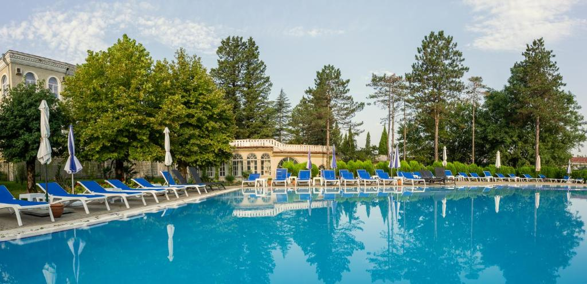

About Us

Tskaltubo Spa Resort is a beautiful and historic spa resort located in the western part of Georgia, near the town of Tskaltubo, which is nestled in the Imereti region. Known for its natural thermal mineral springs, the resort has been a popular wellness destination for centuries, especially for those seeking therapeutic treatments and relaxation.
Mineral Springs and Health Benefits
 Tskaltubo is known for its unique natural thermal mineral waters, which contain a combination of sulfur, radon, and other minerals. These waters are particularly renowned for their healing properties, especially for treating various conditions such as:
Tskaltubo is known for its unique natural thermal mineral waters, which contain a combination of sulfur, radon, and other minerals. These waters are particularly renowned for their healing properties, especially for treating various conditions such as:
How To Get There
 Tskaltubo is easily accessible from Kutaisi, which has an international airport with flights to and from several European destinations. The resort is about a 15-minute drive from the city of Kutaisi.
Tskaltubo is easily accessible from Kutaisi, which has an international airport with flights to and from several European destinations. The resort is about a 15-minute drive from the city of Kutaisi.